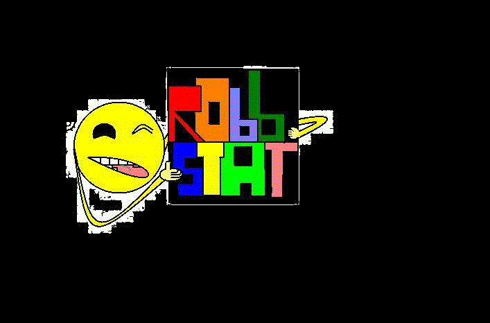

The Un: UnSkilled, UnProfessional, UnEmployed
A collection of unedited sounds created by Robb Walters
Released on June 3,2021
| 1. Piano Un | |
| 2. Ruin | |
| 3. Killer | |
| 4. Uke Un | |
| 5. Dun Dun | |
| 6. UnTitled | |
| 7. Farewell | |
| 8. One Breath | |
| 9. Casual Evening | |
| 10. Mumbling Wish | |
| 11. Pondering | |
| 12. Full Barrels | |
| 13. Agree to Doubt | |
| 14. Hungover's Clarity | |
| 15. UnInspired |
Song Info:
Piano Un
Recorded: April 12th, 2019. This is the very first recording by the author.
Ruin
Recorded: May 4th, 2019.
Killer
Recorded: June 3rd, 2019.
Uke Un
Recorded: June 15th, 2019.
Dun Dun
Recorded: July 29th, 2019.
UnTitled
Recorded: June, 29th, 2019.
Farewell
Recorded: August 8th, 2019.
One Breath
Recorded: September 5th, 2019.
Casual Evening
Recorded: July 14th, 2020.
Mumbling Wish
Recorded: July 18th, 2020.
Pondering
Recorded: July 24th, 2020.
Full Barrels
Recorded: August 9th, 2020.
Agree to Doubt
Recorded: September 3rd, 2020.
Hungover's Clarity
Recorded: September 7th, 2020.
UnInspired
Recorded: January 31st, 2021
